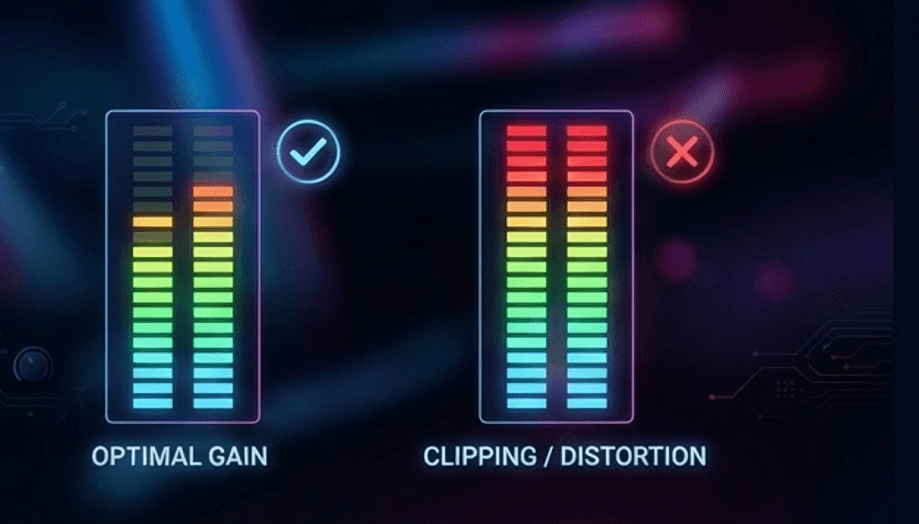
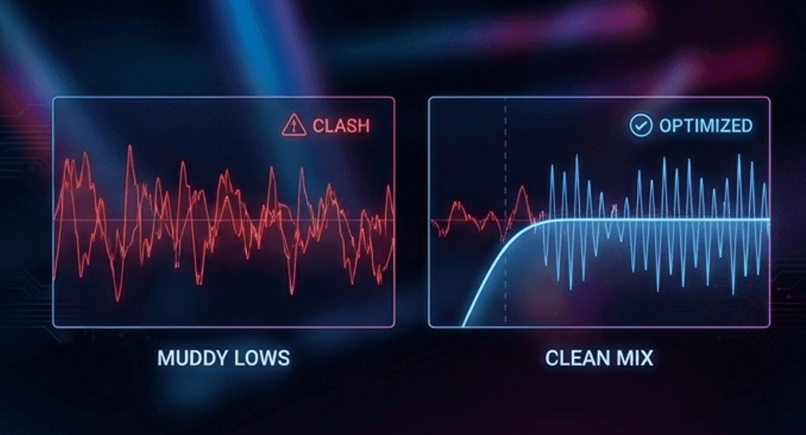
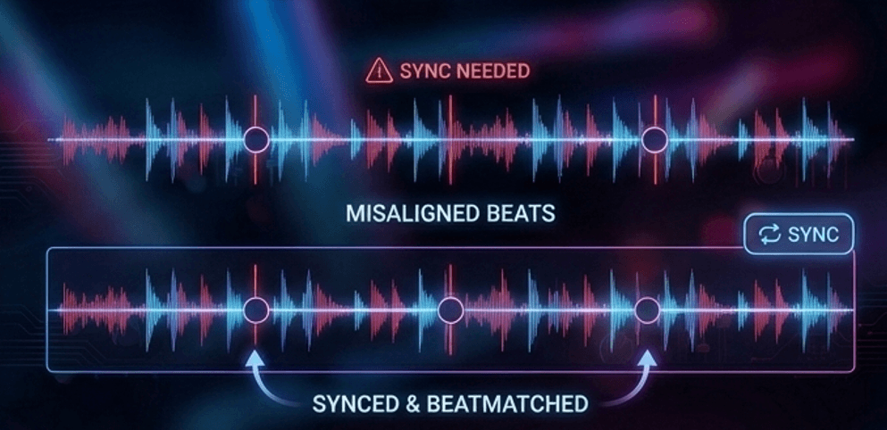
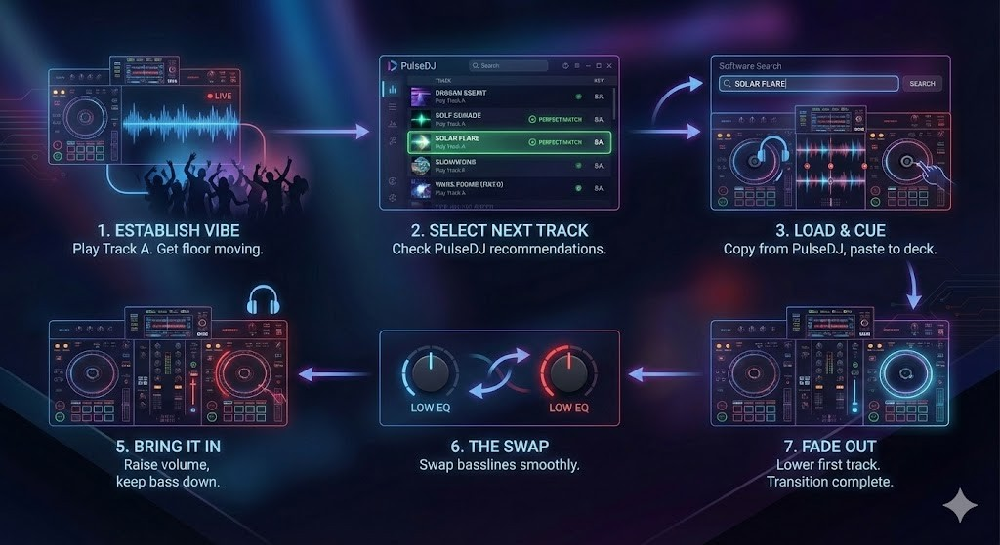
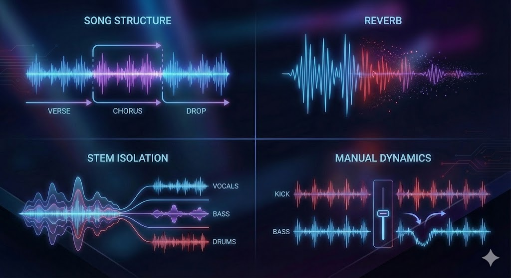

There is a unique kind of magic that happens when you perfectly blend two tracks, creating a third, new musical moment that energizes the crowd. In this guide, I share everything you need to know to learn how to mix songs together.
What You’ll Learn About Mixing Songs Together
- The difference between studio production and live audio mixing for DJs.
- How to control volume levels and EQ to create a seamless blend.
- Tips for understanding song structure and managing frequencies.
- How PulseDJ acts as your co-pilot to help you select the perfect next track.
PulseDJ: The Ultimate Tool for the Mix
Even if you have perfect technique, you need the right music. PulseDJ is a great tool and a smart DJ co-pilot that runs alongside your DJ software.
PulseDJ analyzes your own songs and library to suggest what to play next. It acts almost like a mixing engineer for your playlist, ensuring harmonic compatibility.
- Harmonic Mixing: PulseDJ shows key information (e.g., 8A, 5B) in the suggestion panel. If a track is highlighted green, it is a perfect harmonic match. This ensures the melodies of your two songs won't clash.
- Smart Suggestions: It analyzes the last three tracks you played to recommend the next step.
- Hot 100: You can see what audio tracks are trending globally or filter by genre.
- Safety: It reads your history files without hooking into your audio, so it never causes crashes.
Best of all, PulseDJ is completely free! Download PulseDJ now and start making better mixes.

The Art of the DJ Mix
When people ask how to mix songs together, the answer depends on the context. In the world of music production, a mixing engineer uses audio editing software like FL Studio or Pro Tools. They take separate audio tracks - like vocals, guitars, and instrument sounds - and blend them into a finished mix.
As DJs, our mixing process is different. We aren't usually dealing with individual tracks or a rough mix of a demo. We are taking finished mix stereo files - the kind you’d hear on Apple Music or in your car stereo - and weaving them into a continuous set. Our goal is to take two songs and make them sound like one song during the transition.
The Foundations of a Great Sounding Mix
To mix music effectively live, you need a better understanding of how sound works. Even though we are playing dance music or hip hop, the physics of a good mix remain the same.
Gain Staging and Levels

Gain staging is your first line of defense. If your input levels are too hot (loud), the audio will distort. If they are too low, you lose energy. A good rule is to keep your meters out of the red, ensuring high volume without clipping. You want the tonal balance to remain consistent so the audience doesn't feel a drop in energy.
Frequency Management

When you play two tracks at once, you effectively double the bass volume and kick drums, which can muddy the sound. To get a natural sound, you must carve out space in the frequency spectrum. I often use a high pass filter to cut the lows of the incoming track. This ensures the important elements - like the vocal or the melody - cut through without clashing with the playing track's bass.
Beatmatching and Sync

You need to align the tempo. While you can use a pitch shift fader to manually match beats, you can also use the sync button. The goal is to ensure the kick drums land simultaneously. PulseDJ helps here by suggesting tracks within a +-10 BPM range, ensuring the tempo change isn't too drastic.
Here is a short, practical step-by-step guide on mixing on decks that you can insert directly into the "The DJ Workflow" section of the blog post.
Step-by-Step: Performing the Perfect Mix

- Establish the Vibe: Start playing your first track (Track A) on Deck 1 to get the floor moving.
- Select the Next Track: Glance at PulseDJ to see real-time recommendations based on your current track1. Look for a suggestion highlighted in green, indicating the musical key is a perfect match for a smooth transition.
- Load and Cue: Click the song title in PulseDJ to automatically copy it, then paste it into your DJ software’s search bar to load it onto Deck.
- Beatmatch: With the volume fader down on Deck 2, listen in your headphones. Adjust the tempo (BPM) and nudge the jog wheel until the kick drums of both tracks hit at the exact same time.
- Bring it In: at the start of a new phrase, slowly raise the volume fader of Deck 2. Keep the bass (Low EQ) of the new track turned down so the low frequencies don’t clash.
- The Swap: Once the tracks are locked in, swap the basslines - turn down the Low EQ on Deck 1 while simultaneously turning up the Low EQ on Deck 2.
- Fade Out: Slowly lower the volume fader of Deck 1 until only the new track is playing.
Advanced DJ Mixing Decisions

Once the beats are locked, you have to make creative mixing decisions.
- Structure: Understanding song structure (verses, choruses, drops) helps you know when to start mixing out.
- Effects: I love to add reverb to the outgoing track. It pushes the sound back, making room for the new track's dry signal.
- Isolation: Some modern gear lets you isolate instrument sounds or stems, giving you control similar to having multiple audio tracks.
- Dynamics: While studio producers use side chain compression to duck the bass under the kick, DJs control dynamics with faders. You effectively perform manual compression by riding the volume levels.
From Bedroom to "Mastering"
In the studio, the mastering stage is where a mastering engineer polishes an entire album to sound cohesive on studio monitors. In a live DJ set, you are the mastering engineer. You don't have a separate mastering process or a final stage to fix things later.
To ensure your set sounds like a professional final mix, record your practice sessions. Listen to your recordings to see if the quieter components were lost or if the mix was too cluttered. Listening to your own music mixes is the fastest way to improve.
Comparison: Studio vs. DJ Mixing
Here is how the concepts differ between the two worlds.
Concept
DJ Mixing
Studio Mixing
Source
Completed audio files
Separate audio tracks
Continuous flow of tracks
One balanced instrumental track or song
Mixer, PulseDJ, Controller
Plug ins, multiband compression, Pro Tools
Mixing and mastering live
Audio mixing and mastering offline
Start Mixing Songs Together with PulseDJ
Learning how to mix songs together involves mastering all the sounds at your fingertips. By taking advantage of technology like PulseDJ, you can ensure your track selection is flawless. It is a great app that gives you the confidence to create a great mix every time.
Whether you are spinning different genres or sticking to one vibe, PulseDJ helps you find the perfect connection between songs. It is currently free while in Beta9, making it the perfect time to try it out.
Ready to elevate your sound?
Download PulseDJ today and start mixing harmonically.
‹ How To Find The Key Of A Song: The Ultimate Guide for DJs